2022년에 제작한 게임 프로젝트를 모아둔 페이지입니다.
대학교에서 학과를 게임소프트웨어학과로 바꾸고 본격적으로 게임 제작을 배우게 된 시기입니다.
- 게임 설명 : 탱크를 조종해 랜덤 생성되는 로봇들을 쓰러뜨리면 게임에서 승리한다.
- 사용 툴 및 기술 : Unity
- 제작 기간 : 2022.12.21~2022.12.22 (2일)
- 구현한 기능 : 적 랜덤 생성, UI 표시, 전투 시스템, AI 플레이어 추적 등
- 영상 링크 : https://youtu.be/tMvtVtw_RrU
- 스크린샷


- 게임 설명 : 학과 기말 과제로 진행한 프로젝트로 "협력과 배신"이라는 주제로 게임을 제작함.
- 사용 툴 및 기술 : Unity
- 제작 기간 : 2022.12.20 ~ 2022.12.22 (3일)
- 구현한 기능 : 2인 플레이어 대상 카메라, 각종 무기, 게임 승패 여부 체크 등
- 기말 발표 문서 : 다운로드
- 영상 링크 : https://youtu.be/_PNx1KzDbq4?feature=shared
- 스크린샷
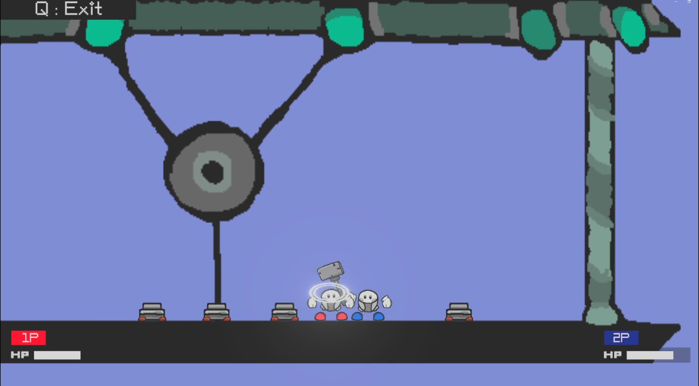 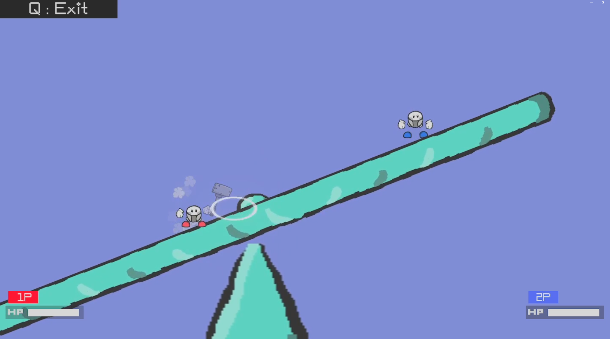 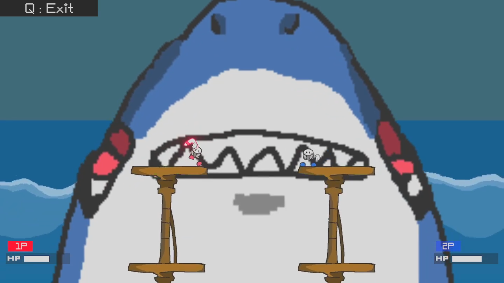- 게임 설명 : 플레이어의 선택에 따라 결과가 달라지는 선택지 게임입니다. 추리 요소가 일부 포함되어 있으며, 증거품을 수집해 범인을 찾아야합니다.
해당 프로젝트는 학과에서 기말 과제로 진행한 프로젝트입니다.
- 사용 툴 및 기술 : Unity
- 제작 기간 : 2022.06.05 ~ 2022.06.08 (4일)
- 맡은 역할 : 프로그래밍 파트를 맡아 게임 내 모든 기능(대화창, 선택지 시스템, 아이템 검색 등)을 구현함.
- 기말 과제 발표 자료(코드 요약 포함) : 다운로드
- 영상 링크 : https://youtu.be/PXsiaEpGL9k?feature=shared
- 스크린샷
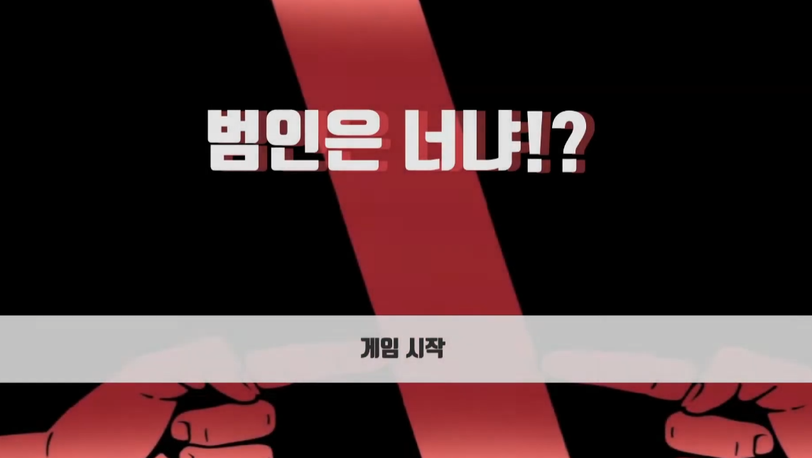 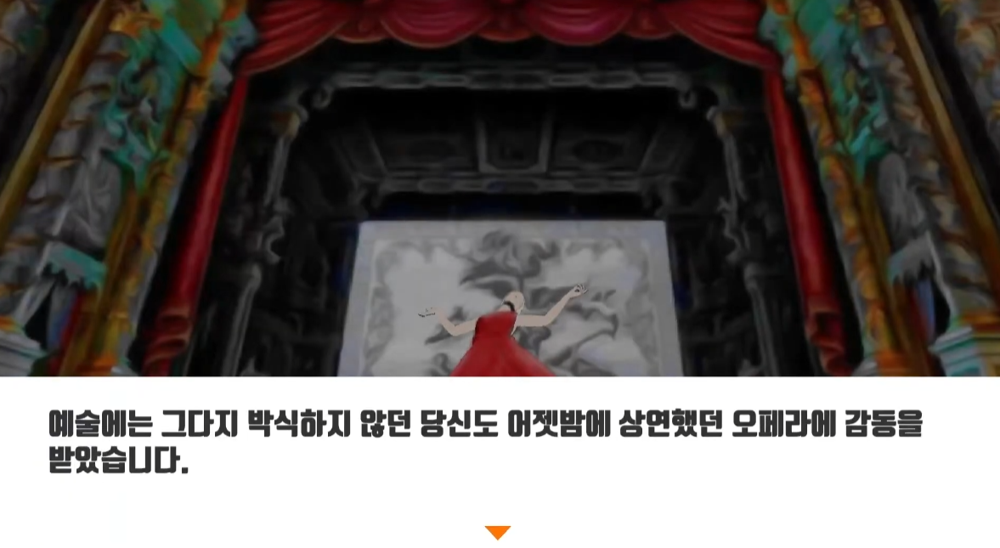 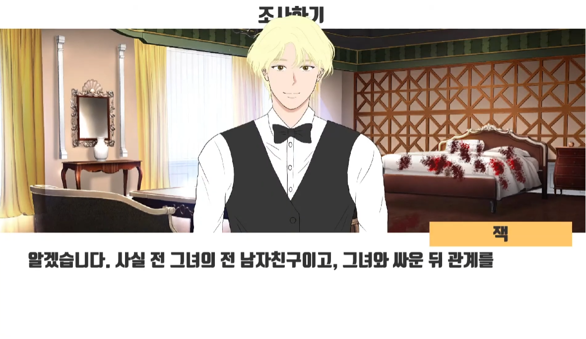 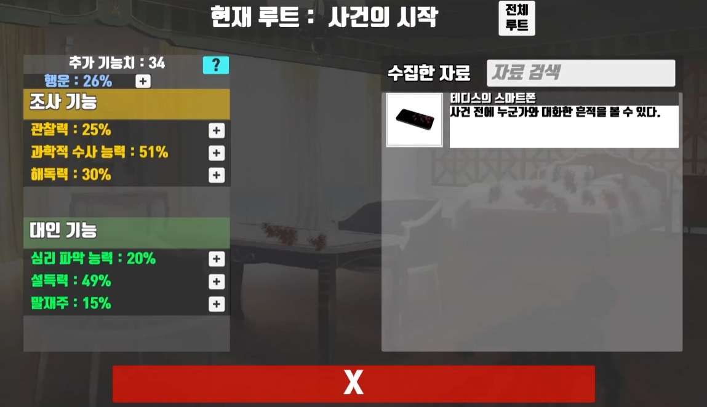- 게임 설명 : 디펜스 게임과 TPS, FPS를 섞어 만든 게임으로 동아리 합숙 프로젝트로 제작한 게임입니다. 해당 게임 내에는 게임잼에도 참여하여 추가적으로 제작한 단순한 플랫포머 게임도 포함되어 있습니다.
- 사용 툴 및 기술 : Unity
- 제작 기간 : 2022.06.27 ~ 2022.08.21 (약 2개월)
- 맡은 역할 : 프로그래밍 역할(플레이어(이동, 공격(자동 조준), 스킬, 카메라 등의 거의 모든 부분), 포탑, 상점, 건축, 상자, 펫, UI(실시간 갱신) 등), 플랫포머 맵 제작, 일부 그래픽 제작
- 주요 클래스 및 코드 요약 문서 : 다운로드
- GitHub 링크 : https://github.com/seanm00n/ROC_3D
(어려웠던 점) : 건축 시스템이나 플레이어의 스킬(패시브, 액티브) 구현 등 처음 만들어 보는 기능들을 구현해야 해 어려움이 많았습니다.
(해결 방법) :
1. Unity 관련 강의를 수강하며 정리해 놓은 자료를 활용해 게임 개발을 진행하였습니다.
2. 게임과 관련된 자료를 조사해 개발에 이용하거나 자료가 없는 경우엔 스스로 개발 방법을 설계하였습니다.
- 영상 링크 : https://www.youtube.com/watch?v=MbCZmiOTxOg
- 스크린샷
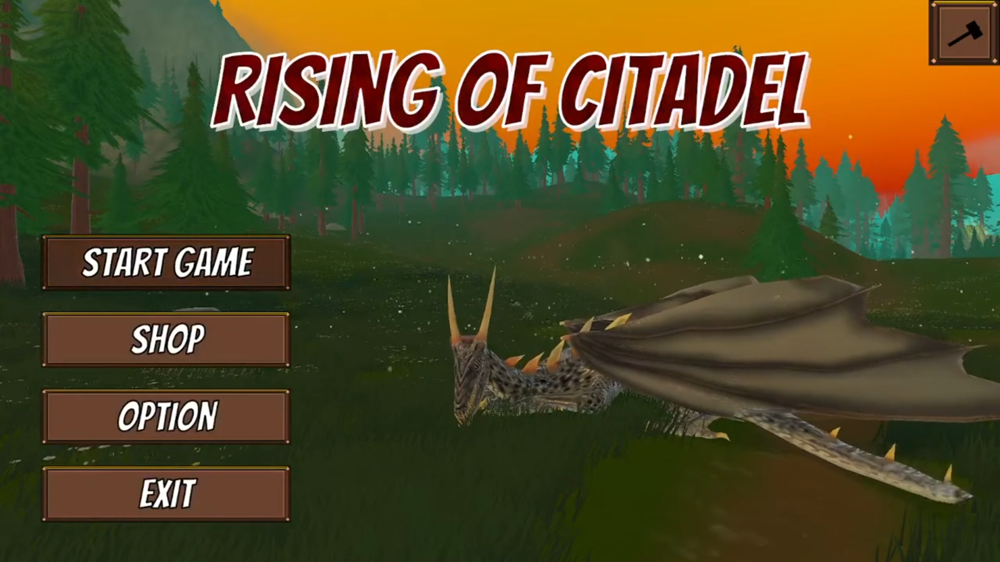 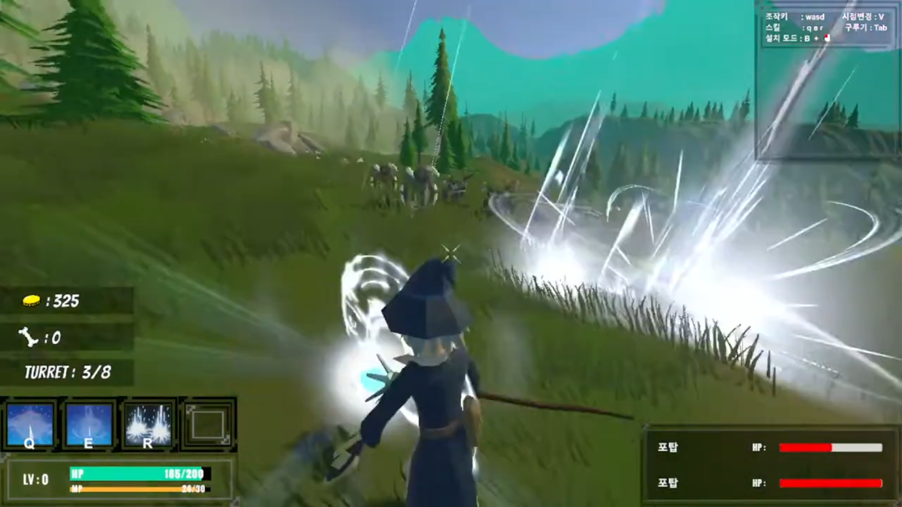 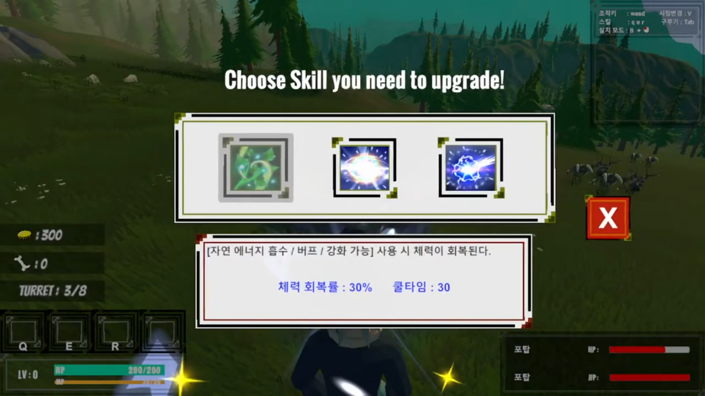 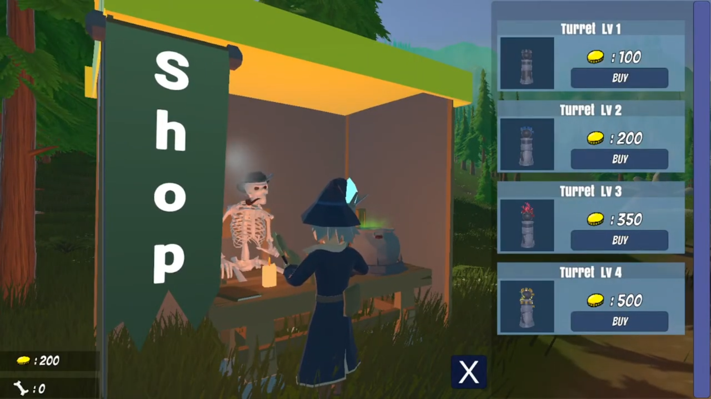 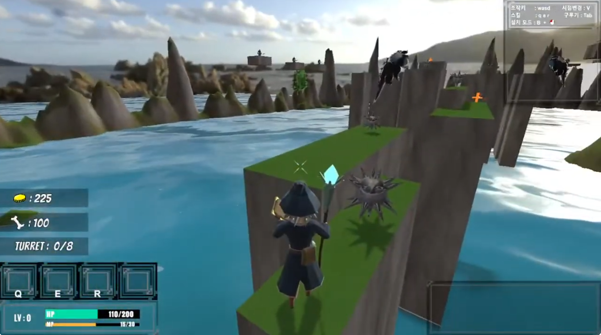 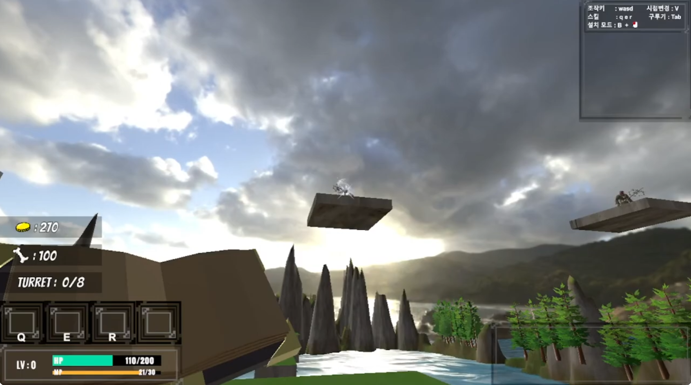- 게임 설명 : 2명이서 표창을 날리며 싸우는 게임으로 스킬과 필살기가 존재합니다.
- 사용 툴 및 기술 : Unity
- 제작 기간 : 2022.02.21~2022.02.23 (3일)
- 구현된 기능 : 플레이어 조작 및 스킬, 2인 대상 카메라, 필살기 시스템, 게임 승패 결정
- 스크린샷
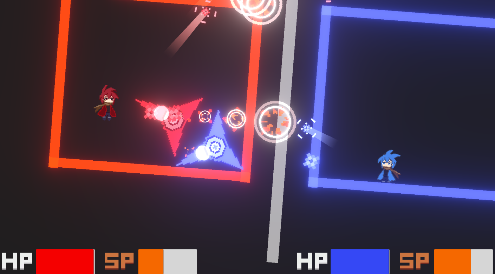